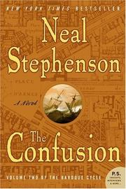

Title: The confusion
Author: By Neal Stephenson, Simon Prebble, Katherine Kellgren, and Kevin Pariseau
Description: Continuing the epic adventure begun in the bestselling QUICKSILVER!In the year 1689, a cabal of Barbary galley slaves -- including one Jack Shaftoe, a.k.a. King of the Vagabonds, a.k.a. Half-Cocked Jack, lately and miraculously cured of the pox -- devises a daring plan to win freedom and fortune. A great adventure ensues, rife with battles, chases, hairbreadth escapes, swashbuckling, bloodletting, and danger -- a perilous race for an enormous prize of silver ... nay, gold ... nay, legendary gold that will place the intrepid band at odds with the mighty and the mad, with alchemists, Jesuits, great navies, pirate queens, and vengeful despots across vast oceans and around the globe.Meanwhile, back in Europe ...The exquisite and resourceful Eliza, Countess de la Zeur, master of markets, pawn and confidante of enemy kings, onetime Turkish harem virgin, is stripped of her immense personal fortune by France's most dashing privateer. Penniless and at risk from those who desire either her or her head (or both), she is caught up in a web of international intrigue, even as she desperately seeks the return of her most precious possession -- her child.While ...Newton and Leibniz continue to propound their grand theories as their infamous rivalry intensifies, stubborn alchemy does battle with the natural sciences, nobles are beheaded, dastardly plots are set in motion, coins are newly minted (or not) in enemy strongholds, father and sons reunite in faraway lands, priests rise from the dead ... and Daniel Waterhouse seeks passage to the Massachusetts colony in hopes of escaping the madness into which his world has descended.
Not Available